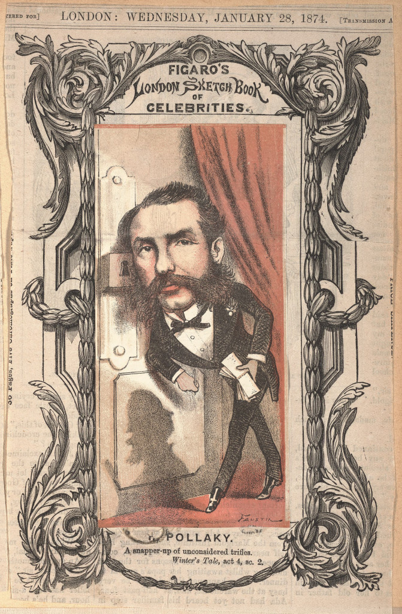

Frequently Asked Questions

What is The Times?
Though The Times was the most popular newspaper in Victorian England, the phrase also refers to the timeframe our exhibition explores. The years between 1860 and 1910 are often considered the “golden age” of newspapers in England. But most other news publications were eclipsed by the popularity of The Times, whose circulation rose from 5,000 in 1815 to a staggering 58,000 by 1855 (Winkworth 61). (By contrast, London’s population increase was 300% in this period, a far cry from the 1000% increase in The Times’ circulation.) Today, it is possible to analyze these newspapers using computational tools made available by databases digitizing these papers.
For much of the 19th century, Victorian newspapers featured a column on the first page known as the ‘Personal Advertisements,’ or simply ‘the personals.’ These were contributions written by individuals rather than journalists or editors, and often included complaint ads of all kinds, some seeking help and bemoaning lost loves while others featuring missing pets. The agonizing voice of the contributors ultimately gave these personal columns the name of ‘the agonies’ or ‘the Agony Columns.’

Why were some written cryptically?
Our exhibition begins to provide answers to the question of why some advertisements were written cryptically. As newspapers grew in popularity, other cultural changes were also affecting Victorian society. Urbanization and industrialization contributed to a rising sense of anonymity in large cities, such as London, leading to what Benedict Anderson has called a "community in anonymity" (qtd. In Rubery 55). As a result, people increasingly relied on the growing popularity of mass media, specifically the Agony Columns, as a form of communication, often with people with whom they had no prior relationship. Such communication, however, was public, featured prominently on the front page of popular newspapers. In order to conduct private correspondences, contributors resorted to codes and ciphers to avoid revealing their conversations to the Victorian public.

Who wrote coded messages in the Agony Columns?
It is impossible to document precisely all the contributors and readers of 19th-century Agony Columns. Our exhibition, however, focuses on three types of narrative that emerge from agony exchanges: tales of crime, stories of love, and exchanges that entertain. Criminals occasionally used the Agony Columns to communicate and schedule rendezvous locations and times. Others used the personals to find and develop relationships, and The Times columns have documented more than one runaway wife or husband, before identifying their whereabouts later. For readers, however, the Agony Columns were a source of tremendous entertainment. Some even attempted to decipher the coded messages with varying degrees of success.
Who have been famous readers-interpreters of Agony Ads?
Throughout the 19th century, many were intrigued by the Agony Columns, but some were more fascinated than the rest.
E.J. Wilson (?–1879).
E.J. Wilson was probably the single most prolific Agony Column message writer of the Victorian era, contributing over 400 personal column messages between 1851 and 1870. Not much is known about his life, but from what records remain he appears to have been a well-read Customs official. Leaving London for Ennis, Country Clare, he taught languages at a local school and died in Liverpool in 1879 (Winkworth 62). Numbered among the pseudonyms that Wilson used and addressed are: "To the Equator", "Indigo Blue", "Alexis", "Rogue et Noire", and "Battledore and Shuttlecock" (Winkworth 63).
Ignatius Pollaky (1828–1918).
Today, of course, the most famous Victorian detective is the fictional Sherlock Holmes. But in the 19th century, deductive minds also existed, and these people scoured the newspapers for evidence and correspondence. Ignatius Pollaky was one of these. Pollaky was not only known for advertising his own business in the Agony Columns, but also for inserting mysterious notes and messages in the newspaper relating to his cases. As it appeared in The Times on 31 July 1868: "Monsignor – Many roads lead to Rome, but how to return? The way is crooked, even for – Pollaky."
Sir Charles Wheatstone (1802–1875) and Lyon Playfair (1818–1898).
Both prominent and well-known men in Victorian England, these two friends shared the hobby of decrypting coded messages that they found in The Times. They managed to decrypt some especially short and difficult ciphers, occasionally sending the cracked codes back to the newspaper for publication in plain English. Later, both would become known for the Playfair Cipher, invented for secret telegraphy communications and used in World War I and World War II. Their code breaking revealed that not all ciphers contained dire and important messages, but were occasionally posted simply for the challenge and effect on the newspaper's readership. One coded message that appeared several times in 1852 read: "Tig tjvhw it tig jfhiiwola og tig psgvw – F.D.N." The cracked cipher appeared on 3 March 1852 as a response from Playfair, addressed to F.D.N.: "The Times is the Jefferies of the Press".

Any relation to Agony Aunts?
Yes! But their relationship is perhaps not as close as the two names suggest. Although newspapers became both affordable and extremely popular in the mid-19th century, the earliest periodical publications date back to the 17th century. And ever since the birth of the newspaper, interactive exchanges between readers and columnists were actively encouraged. These interactive columns ultimately gave way to today's Agony Aunts, who provide general advice through newspapers and magazines to readers who send in questions or requests. The 19th-century Agony Columns covered by our exhibition, while also interactive exchanges, can be distinguished from the columns written by Agony Aunts, both because the latter were written by paid staff journalists and because the personal columns were not focused on providing advice. However, the contents of both columns would often overlap, as many posted and complained about their love lives (or lack thereof), occasionally promoting themselves as potential wives or husbands to others. During the second half of the 19th century, magazines and newspapers targeting a female readership were established in response to the demand for practical advice and marriage opportunities. Specialized newspapers such as the Englishwoman's Domestic Magazine and the Matrimonial News, may be seen as more direct precursors of columns by contemporary Agony Aunts.

Do Agony Columns still exist today?
Yes and no. Certainly, there still exist plenty of Agony Aunts. Dear Mariella, the column of the Agony Aunt of The Guardian, is one such contemporary advice column. But it would be difficult to consider these Agony Columns. First, such columns are primarily focused on advice and are not freeform platforms publishing personal contributions. Secondly, though forms of communication that Agony Columns enabled are still in use (such as steganography, use of coded language, or plain/ciphertext messages), these are not largely associated with newspapers. Today, we expect to hear of cryptography and encryption when discussing computers, not print publications. And yet, even though Agony Columns no longer exist in the same form as they did in the 19th century, they are still remembered in more recent works. For example, Zodiac (2007), A Beautiful Mind (2001), and Sea of Love (1989) are films that feature ciphertext in newspapers in the fashion of 19th-century Agony Columns, and nearly all original and modern reworkings of Sherlock Holmes contain a plethora of newspaper codes to crack. Others, too, like Ghost World (2001), Kissing Jessica Stein (2001), and Desperately Seeking Susan (1985) have their plots advanced by the personal columns of the newspaper. Clearly, the fascination with Agony Columns and their contents has not completely died out. But why the fascination? Hop into the exhibition and find out!